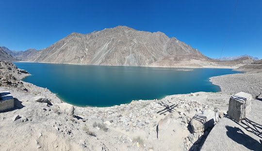

One of the most Beautyfull Country in the World
Pakistan
Pakistan is one of Muslim country on the world map which is very beautiful
country.
It has four seasons;
summer, winter, spring, autumn. There are so many mountains,
valleys, as well as lakes which attracts the
tourists either Pakistanis or internationals,
they always admire the beauty of Pakistan.

History of Pakistan
This article is about the pre-1947 history of Pakistan.
For post-1947 history, see History of Pakistan (1947–present).
Part of a series on the
History of Pakistan
Statue of an Indus priest or king found in Mohenjodaro, 1927
Timeline
Ancient
Classical
Medieval
Early modern
Modern
History of provinces
Category Portal
vte
Part of a series on the
Culture of Pakistan
History
People
Languages
Traditions
Folklore
Cuisine
Festivals
Religion
Art
Literature
Music and Performing arts
Media
Sport
Monuments
Symbols
flag Pakistan portal
vte
History of South Asia
South Asia (orthographic projection)
Outline
National histories
Regional
histories
Specialised histories
vte
A map outlining historical sites in Pakistan
The history of Pakistan preceding the country's independence in 1947[1]
is shared
with that of Afghanistan, India, and Iran. Spanning the western
expanse of the Indian subcontinent and the eastern borderlands
of the Iranian plateau, the region of present-day Pakistan served
both as the fertile ground of a major civilization and as the
gateway of South Asia to Central Asia and the Near East.[2][3]
Situated on the first coastal migration route of Homo sapiens out
of Africa, the region was inhabited early by modern humans.[4][5]
The 9,000-year history of village life in South Asia traces back
to the Neolithic (7000–4300 BCE) site of Mehrgarh in Pakistan,
[6][7][8] and the 5,000-year history of urban life in South Asia to the various sites of the Indus Valley Civilization, including Mohenjo Daro and Harappa.[9][10]
Following the decline of the Indus valley civilization, Indo-Aryan
tribes moved into the Punjab from Central Asia in several waves of
migration in the Vedic Period (1500–500 BCE), bringing with them
came their distinctive religious traditions and practices which
fused with local culture.[11] The Indo-Aryans religious beliefs
and practices from the Bactria–Margiana culture and the native
Harappan Indus beliefs of the former Indus Valley Civilisation
eventually gave rise to Vedic culture and tribes.[12][note 1]
Most notable among them was Gandhara civilization, which
flourished at the crossroads of India, Central Asia, and
the Middle East, connecting trade routes and absorbing
cultural influences from diverse civilizations.[14] The
initial early Vedic culture was a tribal, pastoral society
centred in the Indus Valley, of what is today Pakistan.
During this period the Vedas, the oldest scriptures of
Hinduism, were composed.[note 2]
The ensuing millennia saw the region of present-day Pakistan
absorb many influences—represented among others in the ancient,
mainly Hindu-Buddhist, sites of Taxila, and Takht-i-Bahi, the
14th-century Islamic-Sindhi monuments of Thatta, and the
17th-century Mughal monuments of Lahore. In the first half
nof the 19th century, the region was appropriated by the East
India Company, followed, after 1857, by 90 years of direct British
rule, and ending with the creation of Pakistan in 1947, through
the efforts, among others, of its future national poet
Allama Iqbal and its founder, Muhammad Ali Jinnah. Since
then, the country has experienced both civilian-democratic
and military rule, resulting in periods of significant economic
and military growth as well as those of instability; significant
during the latter, was the secession of East Pakistan as the
new nation of Bangladesh.
The Most Beautyfull Place in Pakistan
Sakardu
Skardu is also a hub for trade and transportation in the Baltistan region. It is located at the confluence of the Indus and Shigar Rivers and is surrounded by several famous mountain peaks, such as Broad Peak, Gasherbrum I-II and K2, the second-highest mountain in the world.